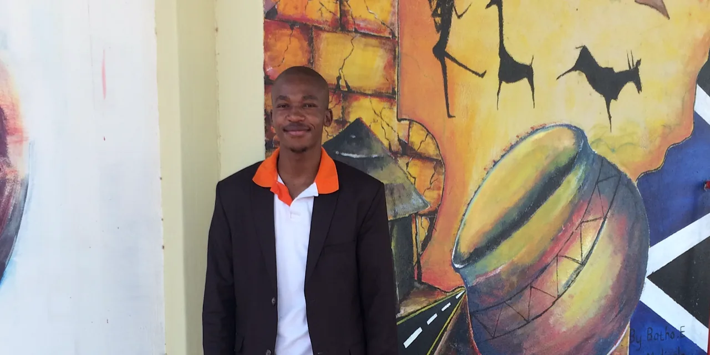

Live → Blog
August 27, 2020

In 2018 I first realized that the excess of male privilege that I carry has blinded me to the ways in which my everyday existence can perpetuate untold harms against non-men. Up until that point, I naively believed I was a good person and all my actions were at the very least not bad. What entitlement!! I wish I could say that as I write this, more than 2 years later, I have washed myself of toxic masculinity and unlearned everything. But I am nowhere near.
The best I can say is I am well along in gaining awareness. I suppose with awareness, there is hope that someday I can do the unlearning. I share this reflection not to claim to be any better or to have found the secrets to this detoxification process, but with the hope that my journey might inspire more brothers - and quite frankly, everyone else too - to reflect on their own role in sustaining the patriarchy. This is one of those processes that we cannot outsource to others. We have to bear the discomfort ourselves. So I do not promise any answers, just the hope of inspiration through questions.
The first question is: who do you need for this journey? The little progress I have been able to make is because I had myself, supportive friends, and the wisdom of adult mentors. I know it is strange to refer explicitly to myself as one of the people I need for this journey. But without personal conviction regarding the necessity of the journey, I would not have had the courage to start or the resilience to persist through the discomfort. I guess this is a good place to add that I am a very stubborn individual, so I will most likely not do anything I do not believe in.
The second set of companions are supportive friends. If you have read my controversial blog post about my friendship philosophy, I am referring to Tier 1 friends here. Tier 1 friendships are those characterized by reciprocity, the mutual commitment towards the growth one another, and security. Since my friends are mostly women, I had to be careful not to overburden and overwhelm them with my journey. Emotional safety is very important in this journey for both myself and my friends. So I shared this journey with those Tier 1 friends who had the emotional and mental bandwidth to support me in the ways I needed. Supportive friends are excellent sources of information, especially with respect to one's blind spots - and I have many of those. They also make excellent accountability partners. So whenever I revert back to toxic patterns, they call me out and keep me in check.
I have had three sources of adult wisdom throughout this journey. I am fortunate that at the onset of this journey, I was already in therapy. My therapist has and continues to provide a space where I can interrogate my masculinity in a safe space. The safety of that space, I realize, is rooted in the fact that my humanity precedes my manhood. It is impressive what a change of perspective can do. In approaching the session as me the person, instead of me the man, I am able to connect more deeply with the values I hold true - including transforming our society to work for all people irrespective of gender identity and sex - instead of being defensive. I have also been blessed with mentors, especially Tim, who have challenged me in dialogue and through reading recommendations. My family has provided the third source of adult wisdom, because their lives contextualize my journey in deeply helpful ways.
The second question is: how do you go about the journey? To be honest, I do not think there is one way to go about this journey. I started by consulting my journals and my friends for the different ways through which my male entitlement manifested. The first way was the direct violation of other people's boundaries. An example of this was my persistence in the pursuit of a romantic interest when they had clearly communicated their disinterest. I took it as them playing hard to get, and my persistence as proof of my "undying love". The second - which might not be different from the first - was my neglect of responsibilities to others. The way this shows up most frequently in my life is my failure to communicate certain truths to people in my life. I think we have a responsibility to not withhold material information from others, since allowing them to make decisions on incomplete information is harmful.
The next step for me was to attempt to uncover the motivations for these actions and inactions. What a whirlwind this step is! The patriarchy is a complex superstructure. All I will say here is this step is never ending because each time you find the root of some behavior, there are more roots for that root. I had to learn to be patient and to be compassionate towards myself. With this seemingly endless loop of roots and causes, there comes many contradictions. Contradictions in both the internal world and the external world. So patience and kindness do come in handy. This is the step where I believe I am. I am in the middle of understanding my motivations for behaving in certain ways, and experimenting with potential alternative behaviors. I cannot thank my support system enough for standing by me through this.
I have gained some insights from this journey. The first is that interpersonal boundaries are complex things to navigate. I think it would be easy if boundaries were constant and they were verbally stated. Unfortunately, our boundaries are as dynamic as we are and an overwhelming majority of them are enforced through non-verbal communication cues. I have also discovered that having lived in different countries, the transmission and reception of non-verbal communication cues is not always the same. It goes without saying that boundaries should be respected always, irrespective of whether or not the transmission and reception of information regarding boundaries is smooth. So while I am trying to figure out how to effectively transmit and receive non-verbal boundary information, I have one of two approaches I am presently using: ask if I feel strongly enough, and otherwise do nothing.
These interim approaches do not come without issues. For one, they are neither sustainable across time nor scalable to all situations and people. But I imagine they should suffice until I figure out some stable process. If only there was some algorithm for navigating these issues. One of the negative externalities of this approach has been that I give the perception that I am passive in my relationships - and perhaps I am. As I said, it is not a painless journey. I hope this is a worthwhile price to pay. I hope it will lead me to some clear path to unlearn all that I need to unlearn, while honoring the human in me's recovery from past traumas. A big question that I cannot seem to answer is: how do I reconcile my detoxification journey, my stubbornness and commitment to my life plan, and my desire for an enduring companionship with a woman? Clearly this is going to require some sacrifice.
There is a lot I still need to learn and figure out, but at least I have some awareness and that is empowering. I am also grateful for my personal conviction and desire to change. There is a saying that I often encounter, "Men are trash!" While I stand behind it and its intention of calling out our violence as men, I hope we - men and anyone else for that matter - remember that some trash can be recycled or turned into compost. I think it is this sliver of hope that allows me to accept that I am trash without falling into indifference. It is this idea that trash can be repurposed and transformed into something with utility, that gives me courage that we can unlearn and be decent human beings. I am thankful to all who walk this journey with me.
← Return to Blog